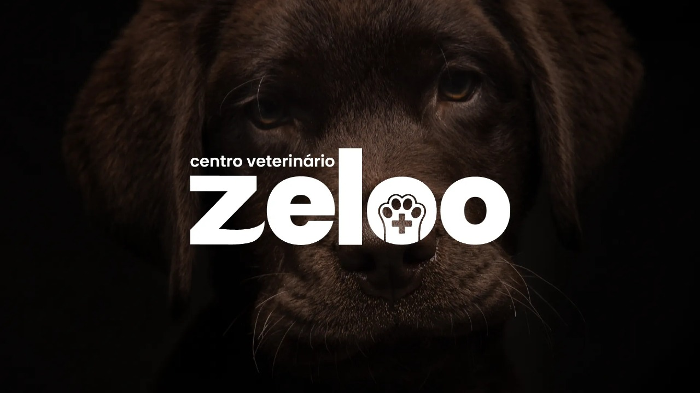

Clínica veterinária / 2024
Zeloo
O cuidado ganha nome, forma e personalidade.

O cuidado ganha nome, forma e personalidade.
O centro veterinário do Mercadão Agropet já fazia parte da vida dos seus clientes, mas precisava de uma identidade própria. O projeto Zeloo dá forma a esse novo momento, com uma expressão visual construída em torno do cuidado e do amor pelos pets.